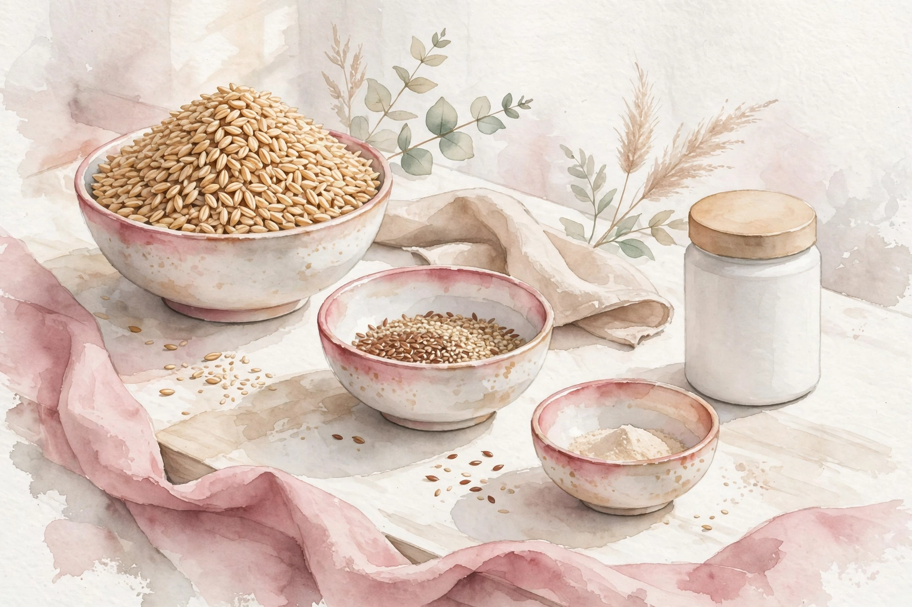

トップ ＞ インナーケア・サプリ ＞ 原材料名の並び順が意味すること
原材料名の並び順が意味すること

別記事「サプリの成分表示の読み方」でも触れましたが、この記事では「原材料名の並び順」だけを取り上げて、もう少し深く整理します。並び順は、表示の中でも特に情報量の多い部分です。
並び順は「使った量」の順
食品の表示では、原材料名は使用した量の多い順に書く決まりになっています。これは加工食品全般に共通するルールで、サプリメントも例外ではありません。つまり、原材料名の最初の数個を見れば、その商品が「何を主体に作られているか」が分かります。気になっている成分が並びの前にあるのか後にあるのかは、商品の性格を知る手がかりです。
たとえば、同じ成分名をうたう商品でも、原材料の並びが違えば中身の構成は違います。買い物の場で2つの商品を裏返して見比べるだけで、この違いは読み取れます。
原材料と添加物は、区分して書かれる
表示の中では、原材料と添加物は区分して記載されます。添加物は、粒を固める、崩れやすくする、色や香りを整える、といった製造上の役割を持つものです。名前の長さや聞き慣れなさだけで判断せず、「この商品の中で、どの位置に、どれくらいの種類が書かれているか」を眺めるのが、表示に慣れる第一歩です。
また、原材料名には「◯◯エキス」「◯◯粉末」のように、加工の形が添えて書かれることがあります。同じ素材でも形が違えば、商品の作り方が違うということです。
含有量表示と組み合わせて読む
並び順だけでは「順番」は分かっても「量」は分かりません。そこで、含有量の表示（1日分あたり◯mgなど）があれば、並び順と組み合わせて読みます。並びの前にあって、かつ量が明示されている成分は、その商品の設計の中心にあると考えられます。
逆に、量の表示がない成分については、表示からは量が分からない、ということも大切な読み取りです。「分からないことが分かる」のも、表示を読む力のひとつだと私は思っています。
実際の見比べの手順を、ひとつ紹介します。気になる商品を2つ用意したら、まず両方の原材料名の最初の3つを書き出します。次に、自分の見たい成分がそれぞれ何番目にあるかを確認し、最後に含有量の表示があるかどうかを見ます。この3ステップで、2つの商品の性格の違いはかなり明確になります。買い物のその場でできなくても、販売ページの表示を並べて見るだけでも同じことができます。表示は、比べるために用意されている情報なのです。
読み方に慣れるまでは、気になる商品1つだけを題材に、表示を上から順に眺める練習をしてみてください。1商品を丁寧に読む経験が、他の商品を読むときの速さにつながります。
セラフィナ「並び順には意味があるんだね。名簿じゃなくて、レシピの骨格として読んでみよう」

セラフィナ｜美容の道具箱の案内役
「量と表示が分かれば、美容は失敗しない。」——セラフィナと白猫のモコが、買う前のチェックポイントを案内します。綺麗になりたい気持ちに正直に、でも表示は冷静に読むのが、このサイトの約束です。